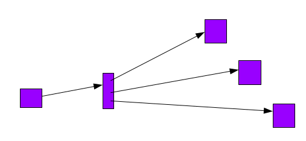
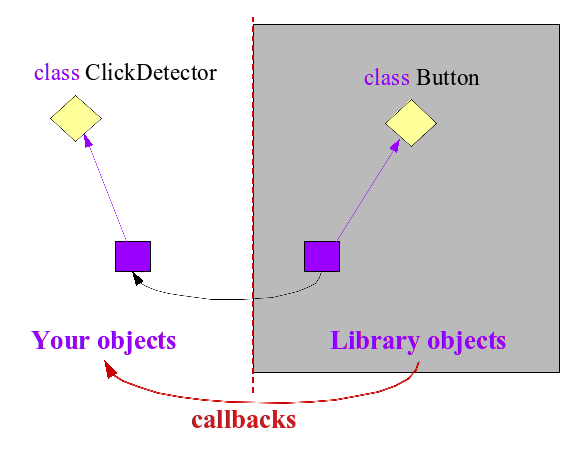
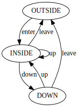

We have been programming together using an object-oriented paradigm
for a while now and some of you have started to see their coding
patterns evolve as a result of that. But some of you are still very
much thinking in
terms of algorithms and data structure, still coding in Java more or less
like they would in any imperative programming language. One question
usually reveals the truth in terms of your object-oriented coding
proficiency: do you think in terms of a population of cooperating
objects when designing and then coding?
You see, this question reveals one of the most important differences
between imperative and object-oriented programming. In the C language,
for example, a structure in C is just some data, it has no
behavior. There is no encapsulation. Then you write some code, encoding
an algorithm rather than a cooperation. With an object,
it helps to think of individuals, offering a public behavior to other
individuals. As an individual, an object
awaits to be asked to do something. When this happens, an object
often relies on other objects to do what has been requested.
This requires that objects know each other, this is what the object
graph is about.
And this is where encapsulation starts to make sense. Think of it this
way, you use the postal service to send or receive letters and parcels,
do you know how the postal service is organized and how it routes
your items? Of course you do not, it is not your concern. Well, the
same is true about objects, you may want to know about a service, but
you do not care about the details of its implementation. This is
encapsulation and it can be done using mechanisms such as
Java interfaces or Java abstract classes as well as deciding
what is public or private.
Object-oriented programming opens a path towards handling complexity
in a very similar way to how humans organize themselves in real life.
As individuals, we do stuff, often relying on the help of others.
Often, we work as teams of individuals, with most teams leveraging
other teams, building larger and larger organisations in this way,
allowing to handle larger and more complex tasks. We are quite far from the pure
algorithmic view of computer science that you are used to. These are not
incompatible, we are not saying that designing algorithms is not useful,
quite the contrary, mastering algorithms is an essential first step.
But, when coding using an object-oriented language, one has to own the paradigm,
perceive its program as a population of objects cooperating together,
and only then object-oriented programming will became a powerful tool,
as opposed to feel like a hinderance.
So why discuss all this now? Well, we are about to discuss
graphical user interfaces, which will challenge your understanding
of object-oriented programming. The frameworks use all of the
advanced object-oriented features such as inheritance and polymorphism.
But more importantly, to understand these frameworks, you must
perceive objects as cooperating entities. Your programs will no
longer be made of a single algorithm. In other words, a
program will no longer be about a single cook following a single recipe,
step by step.
It will be about each cook following multiple recipes, moving along
the different recipes one step at a time, going back and forth
between different recipes. Each cook will react to events, progressing
a recipe a bit and then progressing another one, and so on.
Each recipe is still a recipe, this is not what changed.
What changed is the execution. We no longer execute a single
algorithm from start to finish, we execute multiple algorithms
by small steps, often reacting to external events.
For example, if you are cooking pasta, you cannot put the pasta
in the water until the water boils. The water boiling is the
event and you are reacting to that event by putting the pasta
in the boiling water. Later, the pasta will be cooked, it will
be another event you will react to by draining the pasta.
And so on. Nevertheless, you can write
down the recipe for cooking pasta as a sequence of steps,
as an algorithm, but the execution of this algorithm will
be done incrementally, step by step.
Let's illustrate the perception change from the
standard algorithmic view towards an object-oriented view.
We will use a simple example: a polygon and its translation
on a 2D plane. The algorithmic view is like this:
A polygon is a set of points.
To translate a polygon by (dx,dy):
- iterate over the set
- for each point, translate its coordinates
x = x + dx
y = y + dx
The coding in C would look like something like this:
struct point{
int x,y ;
};
void point_translate(struct point* pt, int dx, int dy ) {
pt→ x += dx ;
pt→ y += dy ;
}
struct polygon{
struct point* points;
int npoints ;
};
void polygon_translate(struct polygon *poly,
int dx, int dy) {
for (int i=0; i < poly→npoints;i++) {
struct point* pt = poly→points[i];
point_translate(pt,dx,dy);
}
}
And the corresponding "data structure" would look like this in memory:
Of course, this looks like an object graph and you could use it as a basis to design the following code:
public class Point{
public int x,y;
public void translate(int dx, int dy) {
this.x += dx;
this.y += dy;
}
}
public class Polygon{
private Point points[];
private int npoints;
public void translate(int dx, int dy) {
for (int i=0; i < this.npoints;i++) {
Point pt = this.points[i];
pt.translate(dx,dy);
}
}
}
Well, you can see this Java code as being just like the C code.
And in some sense, you would be right. But of course, this code
is so simple that it would be hard to design and code it differently.
And yet, we can use this example to see "individuals"
that are "cooperating". Think of yourself as a point.
You are sitting there, quietly, doing nothing. Suddenly,
someone is asking you to move, that is, to translate yourself
from one position to another. Since you are a nice point, you
comply.
Well, as a "point" individual, you do not know. If we step back and you look
at the population of objects, then you understand that the point
was invoked by a polygon. But the same questions apply to the polygon object:
With the above object graph, you just don't know. But it is
ok because you are designing a polygon object, implemented as
a small group of individuals working together: the polygon
object, the array, and the points. You goal is design a
polygon that can be translated.
So let's take this new perception of object-oriented programming
and discuss how it applies to the design and coding of graphical
user interfaces. You all know what a button
is, it is something that you can click on with a mouse.
So let's suppose we have a simple button model with two states:
pressed or released. So we could model it like this:
public class Button{
public boolean isPressed();
}
Great, right? The method will allow you to ask a button
if it is pressed or released. But wait, how would you know
that it changed state?
Are you going to poll it all the time, let's say every 10ms?
And what about if you have ten buttons in your graphical interface?
Now you will poll
all of them? Does that seem practical to you? Well, what do you think?
Most of the time, you will poll them just to discover that
nothing has happened. Imagine the end user has gone for a coffee
break, for several minutes nothing will happen. What about if
he went home for the night? Do you get our point? What you
would like is to be "told" that something has changed
when something has indeed changed.
So a better design would be relying on a "listener":
public class Button{
public boolean isPressed();
public void setListener(ButtonListener l);
}
public interface ButtonListener {
void down(Button b);
void up(Button b);
}
With this design, no more polling
if you want to know what happens to a button,
you would instead register a listener
for the button, an object whose purpose in life is to
wait to be told that the button it watches over had
a change of state. A listener would look like this:
public class MyButtonListener implements ButtonListener {
public void down(Button b) {}
public void up(Button b) {}
public void watch(Button b) {
b.setListener(this);
}
}
Look at the method watch(Button),
it tells you to watch a given button, adding yourself
as a listener. But notice that you have no idea who will invoke the
method watch(Button).
Notice also that you have no idea who will invoke the
methods down
or up. It does not matter.
You are a button listener and your job is to react to whatever
happens to the button, whenever it happens.
So let's assume that the purpose of the listener is to
detect a click: the fact that the button is pressed and then
released. Let's say just like this:
public class ClickDetector implements ButtonListener {
boolean m_clicked = false;
public void down(Button b) { }
public void up(Button b) { m_clicked = true; }
public void watch(Button b) {
b.setListener(this);
}
}
Now, can you guess what the object graph may look like at execution time? Well, something like this:

Notice the two worlds. There is the library world
that provided you with a class
Button,
with objects that are not yours. Then,
there is the world of your objects,
in this instance the object that is an
instance of your class
ClickDetector.
Understand and remember the concept of callbacks from
the library objects on your objects. You need to realize
that you are not in control of that execution flow. Your objects
are reacting to callbacks, that is, invocations
on listeners made by the library objects.
Do you see now why we wanted to be able to see objects
as entities being invoked, organized into
a cooperating population? We hope you do, but as usual,
if you do not, discuss it with other students and with
the teaching staff.
By the way, if you understood that point, you are probably
asking yourself the following question: who will know that
the button was clicked? Sounds like you would need another listener,
right? Something like this:
public interface ClickListener {
void clicked(Button b);
}
public class ClickDetector implements ButtonListener {
ClickListener m_listener;
public void down(Button b) {}
public void up(Button b) {
m_listener.clicked(b);
}
public void watch(Button b, ClickListener l) {
b.setListener(this);
m_listener = l;
}
}
Look at the new method
watch(Button,ClickListener),
the one telling you to watch over a given
button also tells you who to tell when the button
has been clicked. This is of course only one possible
design, but it is a simple one that makes sense. Again,
we see objects as cooperating entities.
It is time that we discuss in more details that
execution flow that invokes the callbacks on
your click detector. We all know
that a button is clicked by a human using the
graphical interface, traditionally called the end user.
So let's imagine that the end user moved the
mouse over the button on the screen,
pressed down the mouse button and then released it.
We would expect our click detector to be
invoked correspondingly by the graphical
library:
Button b; ButtonListener l; l.down(b); l.up(b);
This sequence of invocations is what we had imagined
when writing the code of our click detector
and it works, if the sequence
is always this one. But are we sure it is?
What if the end user presses on the mouse button
while the mouse is somewhere on the screen,
outside of the button, then moves the mouse over the
button, and only release the mouse button there.
Is it a click then? Probably not, right?
Another example: you can also imagine an end user pressing down the
mouse button while over a button on the screen,
but then move the mouse outside of that button,
and only then release the mouse button. In fact,
you do this often, as an end user, to cancel a
click that you started, don't you?
This brings the concept of the grammar of possible
invocations. We originally thought that it would
always be the grammar represented by the regular
expression: (Down Up)*. But it is not quite true.
We need to factor in the fact the mouse may enter
and leave the surface of the button on the screen.
This requires a more complete button listener:
public class Button{
public boolean isPressed();
public void setListener(ButtonListener l);
}
public interface ButtonListener {
void enter(Button b);
void leave(Button b);
void down(Button b);
void up(Button b);
}
So what is the grammar of invocations now?
Somethine like the grammar below, starting in the
state "OUTSIDE":
OUTSIDE:
enter → INSIDE
INSIDE:
up → INSIDE
down → DOWN
leave → OUTSIDE
DOWN:
up → INSIDE : { notify listener }
leave → OUTSIDE
|
 |
|---|
Thus, you need to design your listener as an automaton, also called
Finite State Machine (FSM). The reason is to "parse", meaning
understand the sequence of callbacks. Each method invoked
on your object is a step in a process and that process needs to recognize
a pattern in that sequence: a click. But how do we define a click against
a grammar?
We can define a click through the following sequence: enter-down-up.
A click is recognized upon the "up" transition from the state "DOWN".
When a click is recognized,
the listener (ClickListener)
will be invoked.
So we know that we need to design our listeners as finite state machines, but
you may wonder how to implement a finite state machine for the
grammar given above. There are many ways, but we thought that it would
be good to show you a classical implementation.
public interface ClickListener {
void clicked(Button b);
}
public class ClickDetector implements ButtonListener {
public static final int OUTSIDE_STATE = 1;
public static final int INSIDE_STATE = 2;
public static final int DOWN_STATE = 3;
ClickListener m_listener;
int m_state = OUTSIDE_STATE;
public void watch(Button b, ClickListener l) {
b.setListener(this);
m_listener = l;
}
public void enter(Button b) {
switch(m_state) {
case OUTSIDE_STATE:
m_state = INSIDE_STATE;
break;
}
}
public void leave(Button b) {
switch(m_state) {
case INSIDE_STATE:
case DOWN_STATE:
m_state = OUTSIDE_STATE;
break;
}
}
public void down(Button b) {
switch(m_state) {
case INSIDE_STATE:
m_state = DOWN_STATE:
break;
}
}
public void up(Button b) {
switch(m_state) {
case INSIDE_STATE:
m_state = INSIDE_STATE:
break;
case DOWN_STATE:
m_listener.clicked(b);
m_state = INSIDE_STATE:
break;
}
}
}
Notice this implementation will only work with legal
sequences of callbacks. If any illegal sequence happens, the
behavior is unspecified. In your implementations, we strongly
suggests that you detect and reject illegal sequences.
So go ahead, implement the corresponding click detector.
Look in the source folder task1 and
in the Java packages
object.gui.task1.
You will see the class
ClickDetector that
must be implemented.
Nota Bene: your implementation will have to
accept legal sequences of callbacks but reject illegal
ones by throwing the exception
IllegalSequenceException.
To test your click detector. You can launch the
class Task1Main.
The idea is that it will generate sequences of
callbacks, both legal ones and illegal ones.
Please do commit your work.